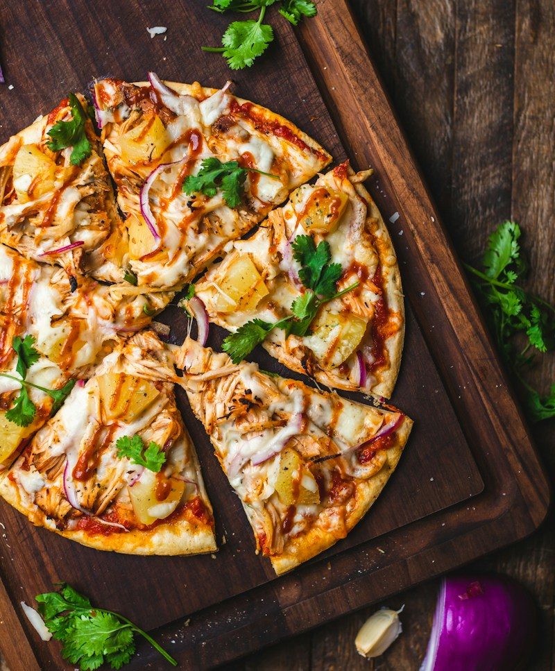
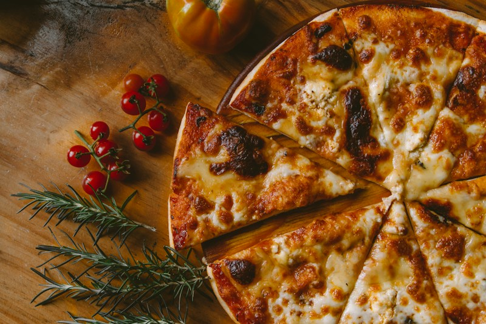
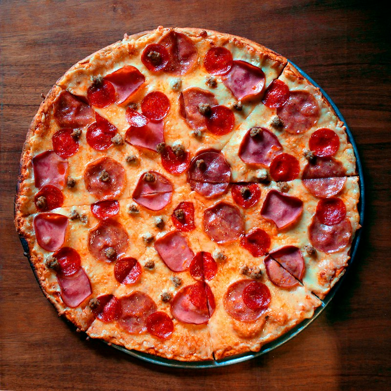
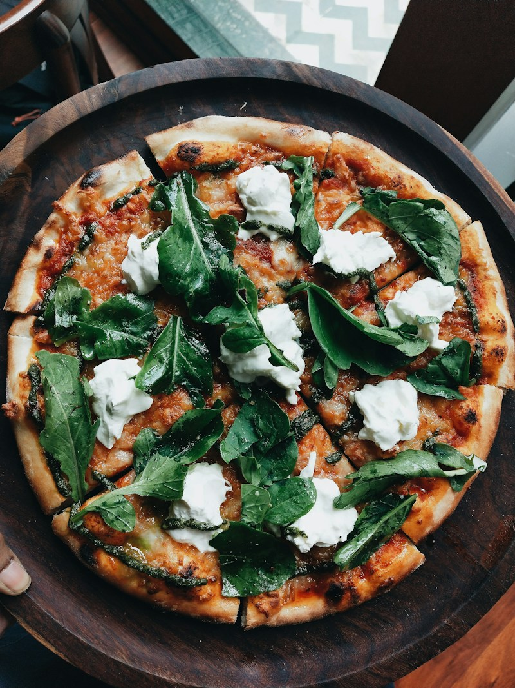
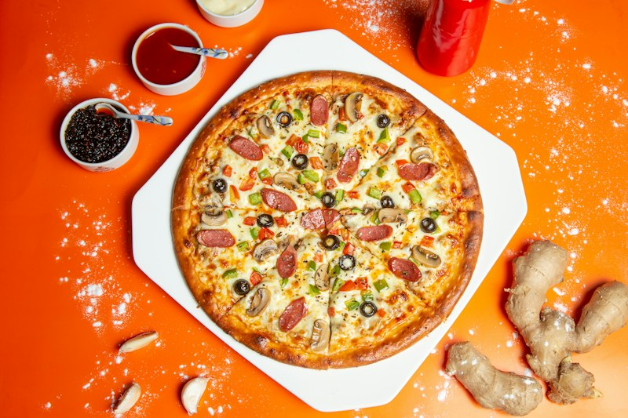

CLASSIQUE INCONTOURNABLE
32 cm • 480 kcal/part
CLASSIQUE INCONTOURNABLE
32 cm • 480 kcal/part
Margherita Classica
22 DTSauce tomate San Marzano BIO, mozzarella fior di latte, basilic frais de notre jardin, huile d'olive extra vierge.
🌿 Végétarien • AOP
📍 LA PIAZZA
La Piazza
PIZZERIA & RISTORANTE
Chaque pizza est pétrie à la main avec une fermentation lente de 48 heures,
cuite à 450°C dans notre four à bois en pierre volcanique.
CLASSIQUE INCONTOURNABLE
32 cm • 480 kcal/part
Sauce tomate San Marzano BIO, mozzarella fior di latte, basilic frais de notre jardin, huile d'olive extra vierge.

32 cm • 530 kcal/partSauce tomate San Marzano, mozzarella fior di latte, jambon cuit supérieur à l'italienne, champignons de Paris frais.

32 cm • Base BlancheBase blanche crémeuse, mozzarella fior di latte, gorgonzola cremoso DOP, ricotta fraîche, taleggio coulant.

PIQUANT 33 cm • SpianataSauce tomate San Marzano, spianata calabrese pimentée, fior di latte, origan sauvage, huile pimentée maison.

SIGNATURE 33 cm • TartufataCrème de truffe d'Ombrie, fior di latte, champignons shiitake et de Paris rôtis, roquette fraîche, parmesan Reggiano.

33 cm • Burrata 125gSauce tomate San Marzano, cœur crémeux de burrata des Pouilles de 125g, pesto génois frais, tomates confites.
Toutes nos pâtes bénéficient d'une hydratation à 70% et reposent 48h au minimum pour garantir une digestibilité absolue et une texture aérée.
CONSEIL SOMMELIER
Chianti Classico DOCG
Venez savourer l'arôme du bois de hêtre et la convivialité de notre trattoria. Réservez votre table pour le déjeuner ou le dîner.
● Confirmation immédiate ● Sans frais d'annulation